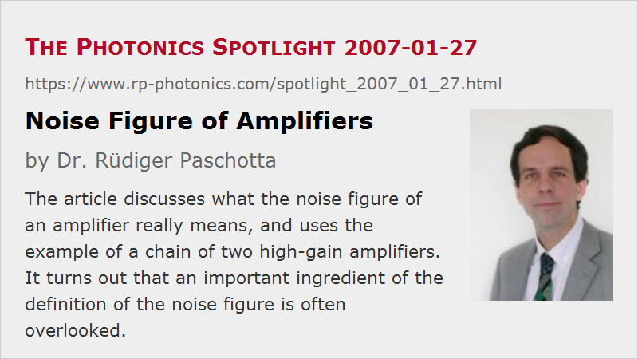

Noise Figure of Amplifiers
Posted on 2007-01-27 as a part of the Photonics Spotlight (available as e-mail newsletter!)
Permanent link: https://www.rp-photonics.com/spotlight_2007_01_27.html
Author: Dr. Rüdiger Paschotta, RP Photonics Consulting GmbH
Abstract: The article discusses what the noise figure of an amplifier really means, and uses the example of a chain of two high-gain amplifiers. It turns out that an important ingredient of the definition of the noise figure is often overlooked.

Ref.: encyclopedia articles on noise figure, amplifier noise, amplifiers
The noise figure of an amplifier (e.g. a fiber amplifier) is often said to simply be the amount by which the signal-to-noise ratio of an input signal is degraded. Then, however, it is not understandable how the noise figure of an ideal high-gain four-level amplifier can always be 3 dB. In particular, how about two such amplifiers in series? If the signal-to-noise ratio is degraded twice, the noise figure should be 6 dB. But considering the two amplifiers as a single amplifier (made as an amplifier chain), it should be 3 dB. It is not conceivable why e.g. two fiber amplifiers in series should be worse concerning amplifier noise than a single longer amplifier.
The confusion arises from the frequently encountered omission of an important condition: the noise figure is the amount by which the signal-to-noise ratio of an input signal is degraded, if the input signal is shot-noise limited. In a chain made of two high-gain amplifiers, the first device may have a shot-noise limited input. Its output will then have strongly amplified quantum noise, plus some excess noise according to the noise figure. This means that the input of the second amplifier has strong excess noise (i.e., noise at a level high above the shot noise level), so that this amplifier won't degrade the noise performance further if it also has a noise figure of e.g. 3 dB.
The exact analog of this occurs with electronic amplifiers, only that quantum noise has to be replaced with thermal noise. Obviously, the apparent mystery as described above is not one of these quantum mysteries, and is relatively simple to resolve. And the understanding of such issues is obviously quite important when considering amplifier noise, e.g. in photodetection and particularly in optical fiber communications.
This article is a posting of the Photonics Spotlight, authored by Dr. Rüdiger Paschotta. You may link to this page and cite it, because its location is permanent. See also the RP Photonics Encyclopedia.
Note that you can also receive the articles in the form of a newsletter or with an RSS feed.
Questions and Comments from Users
Here you can submit questions and comments. As far as they get accepted by the author, they will appear above this paragraph together with the author’s answer. The author will decide on acceptance based on certain criteria. Essentially, the issue must be of sufficiently broad interest.
Please do not enter personal data here; we would otherwise delete it soon. (See also our privacy declaration.) If you wish to receive personal feedback or consultancy from the author, please contact him e.g. via e-mail.
By submitting the information, you give your consent to the potential publication of your inputs on our website according to our rules. (If you later retract your consent, we will delete those inputs.) As your inputs are first reviewed by the author, they may be published with some delay.
|  |
If you like this page, please share the link with your friends and colleagues, e.g. via social media:
These sharing buttons are implemented in a privacy-friendly way!